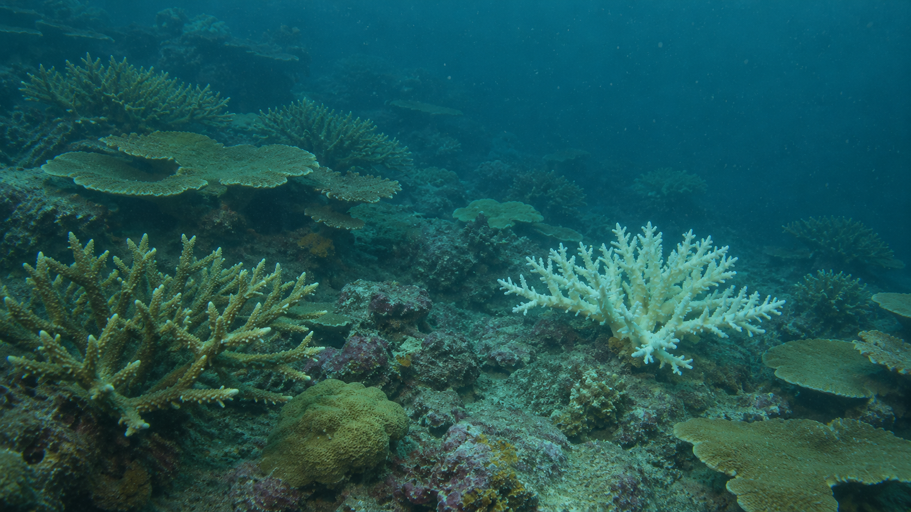

01 / OPTICAL
Camera feed

SYNTHETIC FRAMECAM 01 / RGB
OPTICAL VIEW / SAMPLE FRAME
0 DETECTIONS Boxes in demo are illustrativeSource image is generated for this demo
One clear view of what the vehicle sees, where it is working, and why it acts.

Inspect a cluster’s health, species and position.
Select a decision to inspect the sensor evidence behind it.